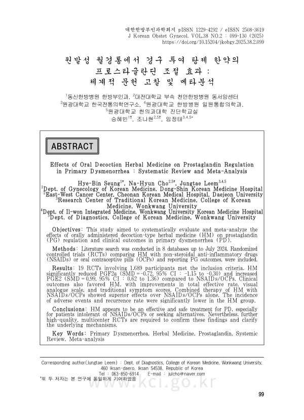

Effects of Oral Decoction Herbal Medicine on Prostaglandin Regulation in Primary Dysmenorrhea: Systematic Review and Meta-Analysis
Seung HB, Cho NH, Leem J
The Journal of Korean Obstetrics and Gynecology 38(2):99-130

첫 장 · 오픈액세스First page · open access
논문 소개Summary
원발성 월경통은 골반 내 질환 없이 생기는 월경 중 하복부 통증으로, 가임기 여성의 절반 이상이 겪습니다. 자궁내막에서 프로스타글란딘이 과다 분비되어 자궁근이 지나치게 수축하고 혈류가 줄면서 통증이 생긴다는 것이 가장 널리 받아들여지는 설명입니다. 일차 치료제인 비스테로이드소염진통제와 경구피임약은 20~25%에서 듣지 않거나 부작용으로 중단하게 됩니다. 한약이 대안이 될 수 있는지, 그것도 증상 설문이 아니라 프로스타글란딘이라는 객관적 지표로 확인한 연구는 없었습니다.
2024년 7월까지 데이터베이스 8곳을 검색해, 경구 투여한 탕제 한약을 비스테로이드소염진통제나 경구피임약과 비교하고 프로스타글란딘 수치를 보고한 무작위배정 임상시험을 모았습니다. 19편 1,689명이 포함됐습니다.
한약 단독 치료를 다룬 14편에서 PGF2알파가 대조군보다 더 낮아졌고(SMD -0.72, 95% CI -1.15~-0.30, I2 92%), 병용 치료 2편에서는 차이가 더 컸습니다(SMD -1.69, 95% CI -2.23~-1.14). PGE2는 반대 방향으로 움직여 단독 치료 12편에서 높아졌습니다(SMD 0.99, 95% CI 0.62~1.36, I2 87%). 두 물질은 같은 전구체에서 나오지만 PGF2알파는 자궁근을 강하게 수축시키고 PGE2는 수축 빈도를 낮추는 쪽으로 작용합니다.
증상 지표도 같은 방향이었습니다. 총유효율은 단독 치료 12편에서 높았고(RR 1.19, 95% CI 1.12~1.27), 통증 시각아날로그척도는 5편에서 낮아졌습니다(MD -1.22, 95% CI -1.97~-0.48). 다만 이 통증 결과의 이질성은 사실상 최대치였습니다(I2 99%). 이상반응을 양군 모두 보고한 5편에서는 한약군이 유의하게 적었고(RR 0.09, 95% CI 0.02~0.32), 재발률도 9편에서 한약군이 낮았습니다(RR 0.60, 95% CI 0.48~0.75).
한계를 함께 보아야 합니다. 포함된 임상시험은 표본이 작고 모두 중국에서 이루어졌으며, 프로스타글란딘을 재는 방법과 시점도 연구마다 달랐습니다. 이상반응을 보고한 연구는 19편 중 6편, 치료 중단 뒤를 추적한 연구는 4편뿐이어서 안전성과 효과의 지속을 말하기에는 자료가 얇습니다. 그럼에도 증상 설문이 아닌 생체표지자로 한약의 월경통 치료를 확인한 첫 종합입니다. 첩약 건강보험 시범사업 처방의 76.5%가 월경통을 대상으로 나간 점에서 국내 진료에도 바로 닿습니다.
Primary dysmenorrhoea is menstrual lower abdominal pain arising without pelvic disease, experienced by more than half of women of reproductive age. The widely accepted explanation is that excess prostaglandin in the endometrium drives excessive uterine contraction and reduced blood flow. First-line non-steroidal anti-inflammatory drugs and oral contraceptive pills fail or are discontinued for adverse effects in 20 to 25 percent of patients. No synthesis had examined herbal medicine as an alternative using prostaglandin as an objective marker rather than symptom questionnaires.
Eight databases were searched through July 2024 for randomised controlled trials comparing orally administered decoction-type herbal medicine with non-steroidal anti-inflammatory drugs or oral contraceptive pills and reporting prostaglandin outcomes. Nineteen trials with 1,689 participants were included.
Across 14 trials of herbal medicine alone (1,233 participants), PGF2-alpha fell further than with the comparator (SMD -0.72, 95% CI -1.15 to -0.30, I2 92%), and in two trials of combined therapy (212 participants) the difference was larger (SMD -1.69, 95% CI -2.23 to -1.14). PGE2 moved the other way, rising in 12 trials of herbal medicine alone (1,041 participants; SMD 0.99, 95% CI 0.62 to 1.36, I2 87%). Both derive from the same precursor, but PGF2-alpha drives strong uterine contraction while PGE2 reduces contraction frequency.
Symptom outcomes pointed the same way. The total effective rate was higher in 12 trials of herbal medicine alone (1,098 participants; RR 1.19, 95% CI 1.12 to 1.27), and pain on the visual analogue scale fell in five trials (428 participants; MD -1.22, 95% CI -1.97 to -0.48), though heterogeneity for that pain result was effectively maximal (I2 99%). In five trials reporting adverse events for both arms (470 participants), the herbal group had significantly fewer (RR 0.09, 95% CI 0.02 to 0.32), and recurrence was lower in nine trials (738 participants; RR 0.60, 95% CI 0.48 to 0.75).
The limits must be read alongside. Included trials were generally small and all were conducted in China, restricting transfer to other settings. Methods and timing of prostaglandin measurement varied, and too few trials were available for subgroup or sensitivity analysis. Only six of the 19 reported adverse events and only four followed patients after treatment stopped, leaving safety and durability thinly evidenced. Even so, this is the first synthesis to examine herbal treatment of dysmenorrhoea through a biomarker rather than symptom questionnaires. Given that 76.5 percent of prescriptions in Korea's herbal decoction insurance pilot programme, launched in 2020, were issued for dysmenorrhoea, it speaks directly to domestic practice.
인용Cite
Seung HB, Cho NH, Leem J. Effects of Oral Decoction Herbal Medicine on Prostaglandin Regulation in Primary Dysmenorrhea: Systematic Review and Meta-Analysis. The Journal of Korean Obstetrics and Gynecology. 2025;38(2):99-130. doi:10.15204/jkobgy.2025.38.2.099